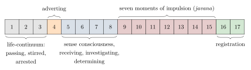

Chapter 5: Buddhist Psychology¶
manopubbaṅgamā dhammā manoseṭṭhā manomayā |
manasā ce paduṭṭhena bhāsati vā karoti vā |
tato naṃ dukkham anveti cakkaṃ va vahato padaṃ ||
Mind goes before all states; mind is their chief; of mind they are made. Speak or act with a mind gone bad, and pain trails after you like the cart-wheel behind the draught-ox’s hoof.
— Dhammapada 1
5.1 Introduction¶
The Buddha, Siddhattha Gotama, lived in the Ganges plain in the fifth century BCE; on the “short chronology” now favoured by most historians he died c. 400 BCE (the older dates 563–483 BCE and the Theravāda dates 624–544 BCE are traditional). His teaching is concerned above all with suffering (dukkha) and its ending, and it locates the origin of suffering in the mind. Over the following fifteen centuries Buddhist scholars developed the most detailed analyses of mental events produced in pre-modern India: the Abhidharma (Pali Abhidhamma) catalogues of mental factors and moments of consciousness, the Yogācāra theory of a “storehouse” consciousness, the Madhyamaka critique of fixed essences, and a vast literature on meditation (Gethin 1998).
The opening verse of the Dhammapada, quoted at the head of this chapter, is often read as a claim that the mind creates the world. The Pali commentary reads it more narrowly: the “states” (dhammā) are the mental factors of feeling, perception and volition that arise together with a moment of consciousness, and “mind” is that consciousness, which leads them as a chief leads followers. Read in this way the verse is a statement about moral psychology: the quality of the mind from which speech and action spring determines what follows from them, a point the Buddha makes elsewhere in the words “it is intention, monks, that I call karma” (cetanāhaṃ bhikkhave kammaṃ vadāmi, Aṅguttara Nikāya 6.63). The verse’s place in Pali literature and its grammar are discussed in Volume 8, Kāvya Kalpalatā, and Volume 10, Śabda Vidyā.
These analyses were produced for a purpose: to support a path of ethical discipline, meditation and insight leading to liberation (nibbāna, Sanskrit nirvāṇa). They rest on doctrines — karma, rebirth, the absence of a permanent self — that are religious commitments as well as philosophical theses. The often-repeated description of the Buddha as “the first psychologist” captures his interest in the mind but obscures this context. This chapter presents the main Buddhist accounts on their own terms; modern research on Buddhist-derived meditation is discussed in Chapter 13. On Buddhist history and institutions more generally see Volume 4 of this series.
5.2 The Four Noble Truths¶
The Buddha’s first sermon, the Dhammacakkappavattana Sutta (Saṃyutta Nikāya 56.11), sets out four “noble truths”: (1) the truth of suffering — birth, ageing, sickness, death, separation from what is dear and, in short, the five aggregates of clinging are suffering; (2) the truth of its origin — craving (taṇhā) for sensual pleasure, for existence and for non-existence; (3) the truth of its cessation — the complete fading away of that craving; and (4) the truth of the path — the Noble Eightfold Path of right view, intention, speech, action, livelihood, effort, mindfulness and concentration.
Buddhist literature itself often compares the Buddha to a physician and his teaching to medicine, and the four truths follow the order of diagnosis, cause, prognosis and treatment. The “disease”, however, is the whole condition of conditioned existence and rebirth, not a particular mental disorder.
5.3 The Five Aggregates and Not-Self¶
Buddhism analyses the person into five “aggregates” or “heaps” (khandha, Sanskrit skandha; Table 5.1).
| Pali | Translation | Scope |
|---|---|---|
| rūpa | Form, matter | The body and the material world |
| vedanā | Feeling | The pleasant, unpleasant or neutral tone of experience |
| saññā | Perception, recognition | Identifying and labelling (“blue”, “a friend”) |
| saṅkhāra | Volitional formations | Intentions and other active mental factors |
| viññāṇa | Consciousness | Awareness through the six senses |
In the Anattalakkhaṇa Sutta (Saṃyutta Nikāya 22.59), traditionally the Buddha’s second discourse, each aggregate is examined in turn: if form were the self, it would not lead to affliction and one could say “let my form be thus”; but form is impermanent, what is impermanent is unsatisfactory, and what is impermanent and unsatisfactory is not fit to be regarded as “this is mine, this I am, this is my self”. The same reasoning is applied to feeling, perception, formations and consciousness. The conclusion is not that there is no person in any sense — the Buddha uses personal language freely — but that nothing in experience answers to the idea of a permanent, independent, controlling self.
5.3.1 The “Person” Controversy¶
The doctrine of not-self was not accepted in the same form by all Buddhists. One group of early schools, the Pudgalavādins (“proponents of the person”), of whom the Vātsīputrīyas and Sāṃmitīyas were the best known, held that there is a “person” (pudgala) that is neither identical with the aggregates nor different from them, and that is needed to explain who transmigrates, who remembers and who attains liberation. The other schools regarded this as a return to the self by the back door, and Vasubandhu devoted the ninth chapter of his Abhidharmakośabhāṣya to refuting it. The Pudgalavāda was nonetheless widespread: Xuanzang found the Sāṃmitīya school to be among the most numerous in India in the seventh century. The controversy shows that the problem of personal identity was debated within Buddhism as fiercely as between Buddhists and Brahmins.
5.4 Dependent Origination¶
The doctrine of dependent origination (paṭiccasamuppāda, Sanskrit pratītyasamutpāda) explains how suffering arises from conditions. Its standard form has twelve links (Table 5.2).
| Pali | Translation | Gloss | |
|---|---|---|---|
| 1 | avijjā | Ignorance | Not knowing the four truths |
| 2 | saṅkhārā | Formations | Volitional activity, karma |
| 3 | viññāṇa | Consciousness | Including the consciousness that links to a new life |
| 4 | nāmarūpa | Name-and-form | The psycho-physical person |
| 5 | saḷāyatana | Six sense bases | Eye, ear, nose, tongue, body, mind |
| 6 | phassa | Contact | Meeting of sense, object and consciousness |
| 7 | vedanā | Feeling | Pleasant, unpleasant, neutral |
| 8 | taṇhā | Craving | For sense pleasures, existence, non-existence |
| 9 | upādāna | Clinging | Grasping at pleasures, views, rules, self |
| 10 | bhava | Becoming | The process leading to rebirth |
| 11 | jāti | Birth | |
| 12 | jarāmaraṇa | Ageing and death | With sorrow, lamentation, pain, grief, despair |
A well-known discourse, the Sallatha Sutta (“The Arrow”, Saṃyutta Nikāya 36.6), illustrates the point with an image. When an untaught person is touched by a painful bodily feeling, he grieves, laments and becomes distraught; he thus feels two feelings, a bodily one and a mental one, like a man struck by one arrow and then by a second. The well-taught disciple, touched by the same painful feeling, does not grieve or lament: he feels only the bodily feeling, “one arrow”. The discourse adds that the untaught person, struck by pain, seeks relief in sensual pleasure because he knows no other escape, and so strengthens the underlying tendencies to lust and aversion. The distinction between pain and the suffering added to it by reaction has become central to modern mindfulness-based pain programmes, which have drawn on it explicitly.
The commentarial tradition reads the twelve links as spanning three lives, but the sequence also lends itself to a reading in terms of a single moment of experience, and much contemporary meditation teaching emphasises the junction between feeling and craving: a pleasant feeling tends to provoke craving, an unpleasant one aversion, and mindfulness of feeling is said to allow the practitioner to notice the feeling without being carried into the reaction. This “present-moment” reading is a legitimate development of the texts, though it is not the only traditional one.
5.5 The Abhidharma¶
In the centuries after the Buddha, monastic scholars systematised the teachings into the Abhidharma (“higher teaching”), which analyses all experience into its ultimate constituents (dhamma, Sanskrit dharma) and specifies how they combine and condition one another. Two Abhidharma traditions survive in full: the Theravāda, whose canonical Abhidhammapiṭaka in seven books was given a standard summary in Anuruddha’s Abhidhammatthasaṅgaha (probably 11th–12th century) (Bodhi 1993); and the Sarvāstivāda, whose system is best known from Vasubandhu’s Abhidharmakośa and its auto-commentary (4th–5th century) (Vasubandhu 1988–1990).
5.5.1 Consciousness and Its Factors¶
The Theravāda Abhidhamma distinguishes four kinds of ultimate reality: consciousness (citta), mental factors (cetasika), matter (rūpa, of 28 kinds) and the unconditioned, nibbāna. Consciousness is the bare knowing of an object; it never occurs alone but always with a set of mental factors that give each moment its specific character. Consciousness is classified into 89 types (or 121, when the supramundane types are counted in relation to the meditative absorptions; Table 5.3).
| Sphere | Number | Subdivisions |
|---|---|---|
| Sense sphere (kāmāvacara) | 54 | 12 unwholesome, 18 rootless, 24 beautiful |
| Fine-material sphere (rūpāvacara) | 15 | 5 wholesome, 5 resultant, 5 functional |
| Immaterial sphere (arūpāvacara) | 12 | 4 wholesome, 4 resultant, 4 functional |
| Supramundane (lokuttara) | 8 | 4 path, 4 fruition (40 in the expanded count) |
| Total | 89 | (121 in the expanded count) |
The 52 mental factors fall into four groups (Table 5.4).
| Group | No. | Members |
|---|---|---|
| Universals | 7 | Contact, feeling, perception, volition, one-pointedness, life faculty, attention |
| Occasionals | 6 | Applied thought (vitakka), sustained thought (vicāra), decision, energy, zest (pīti), desire to act (chanda) |
| Unwholesome | 14 | Delusion, shamelessness, fearlessness of wrongdoing, restlessness; greed, wrong view, conceit; hatred, envy, avarice, remorse; sloth, torpor; doubt |
| Beautiful | 25 | 19 universal beautiful factors (faith, mindfulness, shame, fear of wrongdoing, non-greed, non-hatred, equanimity, and six pairs of tranquillity, lightness, malleability, wieldiness, proficiency and rectitude of body and mind); 3 abstinences; 2 illimitables (compassion, sympathetic joy); wisdom |
The first two groups (thirteen factors) are “ethically variable”: they take on the quality of the consciousness they accompany. Combinatorial rules state which factors can occur together — greed and hatred, for example, never arise in the same moment, while every unwholesome consciousness contains delusion — and the 89 types of consciousness are defined by their factor profiles. The Sarvāstivāda system, as presented in the Abhidharmakośa, counts 46 mental factors in a different arrangement.
The Abhidharma’s list of universal factors amounts to a theory of the minimal structure of any moment of experience: there is always an object contacted, a hedonic tone, a recognition, an intention, a degree of focus, a sustaining vitality and an orientation of attention. The analysis was arrived at through doctrinal reasoning and introspective practice, and it has interested phenomenologists and cognitive scientists (Thompson 2015); it remains a scholastic system with its own aims. Maria Heim has shown how Buddhaghosa’s commentaries use this analysis to develop a sophisticated account of intention and agency (Heim 2014), and C. A. F. Rhys Davids’s Buddhist Psychology remains a pioneering, if dated, survey of the Pali material (Rhys Davids 1914).
5.5.2 The Sarvāstivāda Scheme¶
The Sarvāstivāda school, dominant in north-west India and Kashmir, classified all phenomena into seventy-five dharmas in five groups, as set out in Vasubandhu’s Abhidharmakośa (Vasubandhu 1988–1990) (Table 5.5).
| Group | No. | Contents |
|---|---|---|
| Matter (rūpa) | 11 | Five sense organs, five sense objects, and “unmanifest” matter (avijñapti) |
| Mind (citta) | 1 | Consciousness |
| Mental factors (caitta) | 46 | Universal, wholesome, defiled, unwholesome, minor defilements and indeterminate factors |
| Factors dissociated from mind (cittaviprayukta) | 14 | E.g. possession (prāpti), life-force, the marks of arising and ceasing, names and phrases |
| Unconditioned (asaṃskṛta) | 3 | Space, and two kinds of cessation (including nirvāṇa) |
| Total | 75 |
The school’s name, “those who say everything exists”, refers to its distinctive doctrine that dharmas exist in the past and future as well as the present — a doctrine designed to explain memory and the delayed effects of karma without a self, and vigorously contested by the Sautrāntikas.
5.5.3 The Cognitive Process¶
The Theravāda commentaries describe perception as a series of mind-moments. In the case of a strong object presented at one of the five sense doors, the process has seventeen moments (Figure 5.1):

-
a passing moment of the life-continuum (atīta bhavaṅga);
-
vibration of the life-continuum (bhavaṅga calana);
-
arrest of the life-continuum (bhavaṅgupaccheda);
-
adverting to the five sense doors (pañcadvārāvajjana);
-
the relevant sense consciousness (e.g. eye-consciousness);
-
receiving (sampaṭicchana);
-
investigating (santīraṇa);
-
determining (voṭṭhapana);
-
seven moments of “impulsion” (javana), in which the karmically significant response occurs;
-
two moments of registration (tadārammaṇa),
after which the mind lapses back into the life-continuum. The commentaries say that the whole process takes place in an instant, many such moments arising and passing in the time of a finger-snap. They illustrate it with the simile of a man asleep under a mango tree: a ripe mango falls beside him (the object strikes the sense door); he wakes (adverting), sees it (eye-consciousness), picks it up (receiving), examines it (investigating), decides that it is ripe (determining), eats it (impulsion), swallows the last morsels (registration), and goes back to sleep (life-continuum).
5.5.4 The Life-Continuum¶
The life-continuum (bhavaṅga) is the passive flow of consciousness that continues whenever no active cognitive process is taking place — in dreamless sleep and between perceptions. It is a resultant consciousness, determined by the karma that produced the present life, and it maintains the continuity of the individual stream without requiring a permanent self. It is defined within a theory of karma and rebirth, which limits any comparison with the unconscious or with resting brain activity (Section 1.10).
5.5.5 The Theory of Conditions¶
The last and largest book of the Theravāda Abhidhammapiṭaka, the Paṭṭhāna (“Conditional Relations”), analyses how phenomena condition one another in twenty-four kinds of relation (paccaya). They include the relation of root (hetu) — greed, hatred and delusion and their opposites as the roots of action; of object (ārammaṇa); of predominance (adhipati); of contiguity and immediate succession (anantara, samanantara), by which each moment of consciousness gives rise to the next; of co-arising and mutuality (sahajāta, aññamañña); of support and decisive support (nissaya, upanissaya); of repetition (āsevana), by which a mental state is strengthened by recurring; of karma and its result; of nutriment, faculty, absorption and path; of association and dissociation; and of presence, absence, disappearance and non-disappearance. The scheme is an attempt to state, without reference to a self, all the ways in which mental and physical events can influence one another — including, in the condition of repetition, a principle of habit formation (Bodhi 1993).
5.5.6 Latent Tendencies¶
The Pali texts speak of seven latent tendencies (anusaya): sensual lust, aversion, views, doubt, conceit, lust for existence and ignorance (Aṅguttara Nikāya 7.11–12). They lie dormant and become active when conditions provoke them; the path aims to uproot them, not merely to suppress their outbreaks. The concept occupies in Buddhist thought something like the place that saṃskāra and vāsanā occupy in Yoga.
5.5.7 Momentariness¶
Most Abhidharma schools held that all conditioned things, mental and material, are momentary (khaṇika), arising, enduring for an instant and ceasing; the apparent continuity of a person or a thing is a series of causally connected moments. The Sautrāntikas and later Buddhist logicians argued that a thing perishes in the very moment of its arising. The doctrine of momentariness was attacked at length by Nyāya and Mīmāṃsā philosophers, who argued that memory and recognition (“this is the same pot I saw yesterday”) require an enduring self.
5.6 Yogācāra: The Storehouse Consciousness¶
The Yogācāra school, associated with the brothers Asaṅga and Vasubandhu (4th–5th century CE), held that what we experience as external objects are representations (vijñapti) in consciousness. To explain how karma, memory and the continuity of the person work without a self and without external objects, it introduced the “storehouse consciousness” (ālayavijñāna) (Waldron 2003; Lusthaus 2002), the eighth of the consciousnesses listed in Table 5.6.
| Consciousness | Function | |
|---|---|---|
| 1–5 | Five sense consciousnesses | Seeing, hearing, smelling, tasting, touching |
| 6 | Mental consciousness (manovijñāna) | Thought, judgement, imagination; cognises the objects of the other senses |
| 7 | Afflicted mind (kliṣṭamanas) | Constantly takes the storehouse consciousness as “I” |
| 8 | Storehouse consciousness (ālayavijñāna) | Holds the “seeds” (bīja) of all experience; continuous, subliminal, morally neutral |
Vasubandhu’s Triṃśikā (“Thirty Verses”) describes the transformation (pariṇāma) of consciousness in three forms: the storehouse consciousness, which ripens as the result of past actions; the afflicted mind, which “thinks” it as a self; and the six active consciousnesses, which present objects. Every experience “perfumes” the storehouse with seeds (bīja) that later ripen into further experience. Liberation is described as a “transformation of the basis” (āśrayaparāvṛtti) in which the storehouse is purified.
Yogācāra also analysed experience in terms of three natures (trisvabhāva): the imagined nature (parikalpita), the world as falsely constructed into subjects and objects; the dependent nature (paratantra), the flow of causally conditioned mental events; and the perfected nature (pariniṣpanna), the dependent nature empty of the imagined.
The ālayavijñāna is often likened to the Freudian or Jungian unconscious, but Waldron (2003) has shown that it is better understood within its own context: it was introduced to solve specific problems in Abhidharma theory — the continuity of the mind in deep meditative states and between lives, the persistence of latent tendencies — and its “contents” are karmic seeds rather than repressed wishes or archetypes.
5.7 The Epistemologists: Perception and Concept¶
From the sixth century, the Buddhist epistemologists Dignāga and Dharmakīrti developed a theory of knowledge that profoundly influenced all Indian philosophy (Matilal 1986). They recognised only two means of valid knowledge: perception (pratyakṣa) and inference (anumāna). Perception, Dignāga held, is “free from conceptual construction” (kalpanāpoḍha): it grasps the unique, momentary particular (svalakṣaṇa). Everything that involves concepts and words — recognising the thing as a pot, as blue, as the same pot as yesterday — is a construction of the mind that grasps only universals, which are themselves mental constructs defined by exclusion (apoha). The theory sharply distinguishes the given from the constructed in experience, and its implications for the psychology of perception were debated for centuries.
The epistemologists also held, as described in Chapter 2, that every cognition is aware of itself (svasaṃvedana), and some of them argued for a form of idealism. Their works became the core of the curriculum in logic at Nālandā and in the Tibetan monastic colleges that inherited it (Chapter 11).
5.8 Madhyamaka: Emptiness¶
Nāgārjuna (c. 2nd century CE), founder of the Madhyamaka (“middle”) school, argued in his Mūlamadhyamakakārikā that nothing, including the Abhidharma’s ultimate constituents, has intrinsic nature (svabhāva). Everything is “empty” (śūnya) because everything arises dependently.
Nāgārjuna, Mūlamadhyamakakārikā 24.18
yaḥ pratītyasamutpādaḥ śūnyatāṃ tāṃ pracakṣmahe |
sā prajñaptir upādāya pratipat saiva madhyamā ||
Dependent origination is what we call emptiness. That is a dependent designation; it is itself the middle way.
Chapter 18 of the same work examines the self: if the self were identical with the aggregates, it would arise and perish like them; if it were different from them, it would be without their characteristics. Later Mādhyamikas such as Candrakīrti (7th century) developed the classic “sevenfold” analysis of the chariot and its parts to show that a person is a conventional designation dependent on the aggregates, real for practical purposes but without an intrinsic essence (Garfield 1995).
A psychological moral is easily drawn: if one’s states and self-image are dependently arisen, they are not fixed. The inference is fair, but the Madhyamaka argument itself is metaphysical and soteriological, aimed at the uprooting of all grasping, including grasping at emptiness.
5.9 Mindfulness and Meditation¶
5.9.1 Sati¶
The Pali word sati (Sanskrit smṛti) originally means “memory”, and in Buddhist usage it denotes the keeping in mind of the present object and of what is wholesome and unwholesome. The Satipaṭṭhāna Sutta (Majjhima Nikāya 10; also Dīgha Nikāya 22 in an expanded form) sets out four “establishments of mindfulness” (Table 5.7). Its opening sentence, which calls them the ekāyana path to purification and to the ending of sorrow, grief and pain, is discussed with the rest of the discourse in Volume 4, Buddha–Jina Prabhā; the older rendering “the only way” has largely given place to “the direct path” or “the path that goes to one point” (Ñāṇamoli and Bodhi 1995).
What interests the psychologist is the method. The same instruction recurs for each object: the practitioner observes it “internally” and “externally”, watches it arising and passing away, and establishes mindfulness “only to the extent needed for knowledge and recollection”, dwelling “independent, not clinging to anything in the world”. Mindfulness here is not a free-floating awareness but a disciplined observation of particular objects, directed by doctrine (the body as composed of parts and elements, feelings as pleasant or unpleasant, the mind as with or without lust) towards seeing them as impermanent and not-self.
| Domain | Pali | Contemplations |
|---|---|---|
| Body | kāyānupassanā | Breathing, postures, clear comprehension of activities, parts of the body, elements, the stages of a corpse |
| Feelings | vedanānupassanā | Pleasant, unpleasant and neutral feelings, worldly and unworldly |
| Mind | cittānupassanā | The state of mind: with or without lust, hatred, delusion; contracted or distracted; concentrated or not |
| Dhammas | dhammānupassanā | The hindrances, aggregates, sense bases, factors of awakening, four truths |
5.9.2 Calm and Insight¶
Buddhist texts distinguish two aspects of meditative development: calm (samatha), which unifies the mind through concentration and leads to the meditative absorptions (jhāna), and insight (vipassanā), which sees phenomena as impermanent, unsatisfactory and not-self. The four jhānas are described by the progressive dropping away of factors: applied and sustained thought, then zest, then happiness, leaving equanimity and one-pointedness. Whether insight requires prior absorption, and how the two relate, has been debated within the tradition and in modern scholarship.
5.9.3 Training Attention: The Nine Stages¶
Mahāyāna manuals of meditation analysed the training of attention in fine detail. A scheme found in Asaṅga’s Śrāvakabhūmi and in the Mahāyānasūtrālaṅkāra describes nine stages in the stabilisation of the mind (cittasthiti), from first placing the mind on its object, through continuous and repeated placement, close placement, taming, pacifying and thorough pacifying, to one-pointedness and finally effortless equipoise. The Madhyāntavibhāga lists five faults that obstruct calm — laziness, forgetting the instructions, sinking and agitation, failure to apply a remedy, and over-application of a remedy — together with eight antidotes, among them faith, aspiration, effort, mindfulness and vigilant awareness. Kamalaśīla’s Bhāvanākrama (8th century), composed for the Tibetan court, sets out the stages of calm and insight on this basis. These texts show a detailed practical knowledge of the vicissitudes of attention — dullness and excitement, the need for both effort and relaxation — developed for the purposes of meditation.
5.9.4 Wholesome Desire and Right Effort¶
Buddhism is often summarised as teaching the elimination of desire, but its psychology is more discriminating. It distinguishes craving (taṇhā), which binds, from the “desire to act” (chanda), one of the ethically variable mental factors, which can be wholesome: the desire to practise, to understand and to attain liberation is necessary for the path. The “four right efforts” (sammappadhāna) describe how that energy should be directed: to prevent unwholesome states that have not yet arisen, to abandon those that have arisen, to develop wholesome states that have not yet arisen, and to maintain and increase those that have. The scheme recognises that mental training involves both restraint and cultivation, and that the will to change is itself a mental state that can be strengthened.
5.9.5 Hindrances and Factors of Awakening¶
The Pali discourses list five “hindrances” (nīvaraṇa) that obstruct concentration: sensual desire, ill will, sloth and torpor, restlessness and remorse, and doubt. The texts compare a mind freed of them to a man released from debt, recovered from illness, freed from prison, freed from slavery and safely across a desert. Opposed to the hindrances are the seven “factors of awakening” (bojjhaṅga): mindfulness, investigation of phenomena, energy, joy, tranquillity, concentration and equanimity. The texts advise that when the mind is sluggish one should cultivate investigation, energy and joy, and when it is agitated, tranquillity, concentration and equanimity — an early example of matching a remedy to a mental state.
5.9.6 Stages of the Path¶
The Buddhist path is described as a sequence of attainments in which “fetters” (saṃyojana) are progressively destroyed. The “stream-enterer” (sotāpanna) has abandoned belief in a permanent self, doubt and attachment to rules and rituals; the “once-returner” has weakened sensual desire and ill will; the “non-returner” has abandoned them; and the arahant has abandoned the subtler fetters of desire for refined existence, conceit, restlessness and ignorance. The scheme amounts to a developmental account of the person in terms of the weakening of particular cognitive and emotional dispositions. In the Mahāyāna traditions it was supplemented or replaced by the path of the bodhisattva, who seeks awakening for the sake of all beings and passes through ten stages (bhūmi).
5.9.7 Matching Practice to Temperament¶
Buddhaghosa’s Visuddhimagga (5th century; (Buddhaghosa 1956)) classifies practitioners into six temperaments (carita) and recommends meditation subjects for each (Visuddhimagga III; Table 5.8).
| Temperament | Suitable subjects (selection) |
|---|---|
| Greedy (rāga) | The ten kinds of foulness; mindfulness of the body |
| Hating (dosa) | The four divine abidings; the four colour kasiṇas |
| Deluded (moha) | Mindfulness of breathing |
| Faithful (saddhā) | The first six recollections (of the Buddha, Dhamma, Saṅgha, virtue, generosity, deities) |
| Intelligent (buddhi) | Recollection of death and of peace; the defining of the four elements; repulsiveness of food |
| Speculative (vitakka) | Mindfulness of breathing |
The principle that teaching should be matched to the student is a recurrent theme in Indian pedagogy (Section 4.8), and Buddhist tradition describes the Buddha himself as adapting his teaching to his audience (upāya, “skilful means”).
5.9.8 The Divine Abidings¶
The four “divine abidings” (brahmavihāra) or “immeasurables” are loving-kindness (mettā), compassion (karuṇā), sympathetic joy (muditā) and equanimity (upekkhā). The Visuddhimagga (IX) identifies for each a “far enemy”, its opposite, and a “near enemy”, a state that resembles it and can be mistaken for it (Table 5.9).
| Abiding | Near enemy | Far enemy |
|---|---|---|
| Loving-kindness | Greed (attached affection) | Ill will |
| Compassion | Grief based on worldly life | Cruelty |
| Sympathetic joy | Worldly joy (exhilaration) | Aversion, discontent |
| Equanimity | Equanimity of unknowing (indifference) | Greed and resentment |
The analysis of “near enemies” is a subtle piece of moral psychology: it recognises that a counterfeit of a virtue may be harder to detect than its opposite. Modern research groups have studied compassion and loving-kindness training adapted from these practices; that research and its limits are discussed in Chapter 13.
5.10 Working with Emotion: Śāntideva¶
The Mahāyāna poet-philosopher Śāntideva (8th century), traditionally associated with Nālandā, wrote in his Bodhicaryāvatāra (“Entering the Path of Awakening”) one of the most influential Buddhist treatments of the emotions. Its sixth chapter, on patience (kṣānti), analyses anger. Anger, Śāntideva argues, destroys the merit of aeons; it arises from frustration; and it rests on a misunderstanding of causation. If I am struck with a stick, I do not blame the stick but the person who wields it; yet that person is himself driven by anger, as the stick is driven by his hand, so I should rather direct my anger at anger itself. An enemy, moreover, is a rare opportunity to practise patience, and so a kind of benefactor. The chapter is a sustained exercise in cognitive reappraisal, aimed not at suppressing anger but at undermining the judgements on which it rests.
The eighth chapter, on meditation, develops the practices of “equalising self and others” and “exchanging self and others” (parātmasamatā, parātmaparivartana): since suffering is bad whoever it belongs to, there is no reason to prefer the removal of my own suffering to that of another’s, and one should train oneself to regard others’ welfare as one’s own. These ideas became the basis of the Tibetan “mind-training” (blo sbyong) literature, which has been a source for modern compassion-training programmes. Śāntideva’s work shows the Buddhist analysis of mind applied to the transformation of emotion through argument and imagination.
5.11 Assessment¶
Buddhist psychology offers a non-substantial account of the person, a detailed taxonomy of mental states and their ethical qualities, a theory of how experience conditions later experience, and a body of practical methods for training attention and emotion. These contributions are widely recognised. Their transfer into modern clinical contexts — above all through mindfulness-based programmes — has been productive, but it has also involved simplification: the removal of ethical and doctrinal context, the redefinition of sati as non-judgemental awareness, and claims for clinical effectiveness that sometimes outrun the evidence. A historical presentation should keep these two things distinct: what the Buddhist texts teach, and what modern adaptations of them have been shown to do.
It should also remember that Buddhist psychology developed in India over some fifteen centuries, in debate with Brahmanical, Jain and materialist rivals, and that its later history unfolded largely outside India — in Sri Lanka, Southeast Asia, Tibet, China, Korea and Japan. The Abhidharma, the Yogācāra and the meditation manuals discussed in this chapter are part of India’s intellectual heritage even though, after the decline of Buddhism in India, they were preserved and developed mainly by others.
Further Reading¶
-
Gethin (1998): a reliable introduction to Buddhist doctrine and practice.
-
Bodhi (1993): the Abhidhammatthasaṅgaha with explanatory guide and charts; the clearest presentation of the Theravāda Abhidhamma.
-
Buddhaghosa (1956): translation of the Visuddhimagga; Ñāṇamoli and Bodhi (1995) for the Majjhima Nikāya, including the Satipaṭṭhāna Sutta.
-
Vasubandhu (1988–1990): English translation of the Abhidharmakośabhāṣya.
-
Waldron (2003) and Lusthaus (2002): the Yogācāra theory of mind.
-
Garfield (1995): translation and commentary of Nāgārjuna’s Mūlamadhyamakakārikā.
-
Warder (2000): a history of Indian Buddhism and its schools.